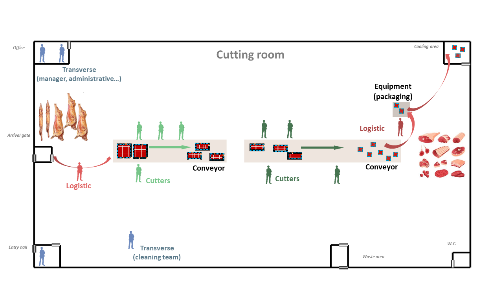
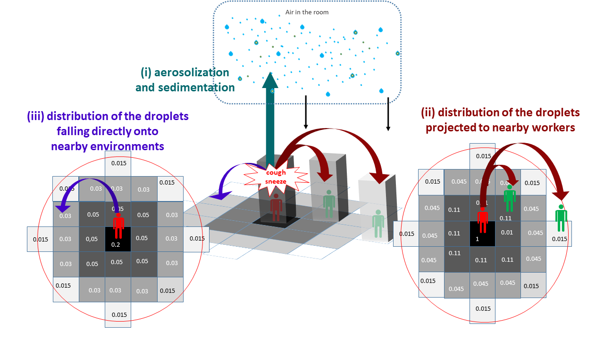

![]()

1 Background and objectives
2 Model description
The ABM model is presented in this study according to the Overview-Design-Details (ODD) protocol as recommended by Grimm et al. (2010).
2.1 Overview
The outline of the agent-based modelling workflow developed in this study is schematized in Figure 1.
- Purpose and patterns
The developed model was aimed to predict …
- States variables and scales - Parameters overview
Several parameters were included in the model. On the one hand, some parameters… On the other hand, based on multiple industrial and epidemiological investigations, other parameters were included to describe the behavior of the model in different scenarios. These scenarios can be defined by ch as well as the behaviors of the agents
- Process overview and scheduling
The model was divided in four separate modules describing different agents evolving in the processing plant including (i) the workers, (ii) the droplets in the air, (iii) the inert surfaces and (iv) the food products, respectively. As schematized in @ref(fig:fig-abm-outline), different possible interactions between these agents were described, such as the transmission of the droplets probably containing viral particles between infectious workers and the air through their respiratory activities (exhalation and inhalation), the sedimentation of these droplets from the air onto inert surfaces and/or food portions as well as the transfers between surfaces and food, etc. Based on prior data or knowledge, spatiotemporal rules were defined to simulate the interactions between modules and the properties of every agents at successive time points distanced by a predefined short time step (minutes). These step-by-step simulations were performed afterwards for longer periods (days, weeks, etc.). At the end of these periods, balances were calculated for different properties of the agents, e.g. the total number of aerosolized or fallen droplets, the number of viral gene copies inhaled by each worker, etc. Based on these balances, several contamination indicators were estimated such as the total number of infected workers, the number of contaminated food portions and surfaces in the plant, etc. These estimated indicators could be compared with collected epidemiological data for further model validation purposes.
2.2 Design concept
2.2.1 Basic principles
The different agents integrated into the model for describing the functioning of the meat processing plant are illustrated in Figure 2. The model was implemented in the way that end-users can include by themselves as input data the different characteristics of the plant such as its dimensions, structures, objects, etc. For instance, as shown in Figure 2, the illustrated plant is made up of several rooms / spaces including an entry hall for workers, an office, a cooling area for food storage, a large area for meat cutting activities with two conveyor belts for food transfers and a packaging machine, etc. Different types of workers were considered in the model depending on their respective activities, including the cutters, the logistic workers as well as the ones with transverse activities. The number of workers of each type present in the plant and their respective working rhythm and timetable condition then the daily meat processing flow (meat quantity, processing duration) of the overall plant. This processing flow was described as successive transformation steps of the meat products: the carcasses/half-carcasses arriving in the plant through the gate are transported to the conveyors by logistic workers, become smaller meat portions after different cutting steps carried out by cutters around the conveyors and eventually packed and stored in the cooling area. Other workers with transverse activities such as manager, administrative or cleaning workers can also be present in the plant at different moments depending on their respective timetable. Based on the overall timetable of the plant, one can define rules for generating predefined or random movements of every agents (workers, carcasses, meat cuts…) between different locations in the plant at different time points. Determining these movements over time will allow then to track the possible transmission of the virus introduced by one or several infectious workers in the plant.

The transmission of the virus from one or several infectious workers to other susceptible workers, surfaces and food products are schematized in the Figure 3. In this study, the duration between the different successive infection phases were taken into account from new infection to recovery with/without symptoms development. The different infectious workers can exhale into the air, through their respiratory activities or symptoms such as breathing, talking, sneezing or coughing, different amounts of droplets containing or not viral particles due to variability between workers and depending on their behavior (mask wearing). These droplets of various sizes can be aerosolized and/or fall afterwards onto inert surfaces and food products depending on the characteristics of the ventilation system in each space of the plant. Some high-diameter droplets sent out by the infectious workers (e.g. in cases of sneezing or coughing) can also fall directly onto surfaces without being aerosolized and/or projected towards nearby workers. The total viral loads on different surfaces and/or food products (meat cuts) are also enumerated; they are considered as contaminated if the viral loads exceed a predefined threshold value. The non-infected workers (susceptible workers) can inhale more or less of droplets depending on their positions in the plant at different moments. The cumulative viral doses inhaled by each susceptible worker at the end of the day can then probably trigger an infection following a dose-response relationship. At last, in addition of these possible infections inside the plant, the model included also other contamination sources outside the plant: the susceptible workers can get infected due to the outside epidemic situation and or by community activities such as co-living with infectious workers.

2.2.2 Prediction
The parameters
2.2.3 Stochasticity
The stochasticity
2.3 Details
2.3.1 Modules - Sub-models
2.3.1.1 Food processing plant
Structures
The structure of the multi-room food processing plant can be included as inputs of the model. Based on industrial investigations / interviews, seven principal rooms (spaces) were included herein as an example to define the plant structure, including the Cutting room (the main space of the plant), Entry hall (for workers), Arrival gate (for food arrival into the cutting room), Cooling area (for food storage), Waste area, W.C., and Office (illustration in Figure 2).
The different characteristics of each room are included as inputs of the model:
- dimensions of the plant and dimensions of the different rooms, expressed in m (the length and width on two axes, denoted X and Y axes, respectively, and height on a 3rd axis, denoted Z axis);
- positions of the room in the plant;
- presence and relative positions of internal/external door for each room;
- ventilation specifications: several air conditioning types can be indicated such as Controlled Mechanical Ventilation (CMV), Direct Expansion Coil (DEC) or Air Handing Unit (AHU).
The above characteristics were defined in the model as model parameters based on industrial investigations or previous works. For example, each room needs to be positioned on the entire workshop grid using a numerical value between 0 and 1 indicating the relative position over the axes. The cutting room is the main build by subtracting all other rooms. The position of the internal and external doors can also be mentioned using the predefined values top, bottom, left or right.
Objects
The different objects or equipment can be included inside the plant such as conveyors, peeler, etc. In the same ways as for the different rooms, their dimensions and their relative position alongside the X and Y axes are included as model inputs. As illustrated in Figure 2, two types of objects were included : two conveyor belts allowing to transport the different carcasses or food portions from one point to another and an equipment that can be shared by several operators (e.g.: a peeler, frequently used in meat cutting plant). Some parameters values characterizing these objects are illustrated in Table 1.
| Parameters | name of the object | length of the object | width of the object | Position of regarding the X axis of the plant | Position regarding the Y axis of the plant |
|---|---|---|---|---|---|
| Label in ABM script | label | dim.X | dim.Y | pos.X | pos.Y |
| unit | meter | meter | 0 to 1 (0: left, 0.5: middle, 1:right) | 0 to 1 (0: bottom, 0.5: middle, 1:top) | |
| cvy | Conveyor1 | 13 | 3 | 0.2 | 0.5 |
| cvy2 | Conveyor2 | 18 | 3 | 0.5 | 0.5 |
| epmA | Equipment 1 | 2 | 2 | 0.85 | 0.7 |
2.3.1.2 Workers
Type of workers
Different principal types of workers were taken into account in the model depending on the their daily tasks inside the plant. According to industrial investigations and expert knowledge, six types of workers were included as following (Figure 2)
- logistic1 : the workers in charge of bringing carcasses (or half-carcasses), arriving in the cutting room through the arrival gate, to the begin of the conveyor for cutting.
- cutter1 : positioned around the first section of the conveyor, denoted conveyor1, in charge of deboning, trimming and cutting carcasses into large pieces;
- cutter2 : workers in charge of cutting larges pieces from cutter1 into smaller food portions;
- logistic2 : the workers in charge of transferring food portions from the cutting tables to the packaging or supplementary treatment equipment and storing packed products in the cooling area;
- transverse1: administrative workers such as manager, chief or maintenance staff who mainly stay out of the cutting room during the work day;
- transverse2: workers from the cleaning team.
The total number of employees is defined as shown in Table 2.
| Parameters | Label in ABM script | Value | Unit | Uncertainty range | References |
|---|---|---|---|---|---|
| Total number of worker | Nworkers | 100.000 | N/A | [??-??] | [interviews] |
| Number of regular worker | Nworkers_ext | 15.000 | N/A | [1-4] | [interviews] |
| Number of temporary worker | NA | ||||
| Number of subcontract worker | NA | ||||
| *Overall proportion for different types of workers * | |||||
| Cutter | cutter1 | 0.360 | ratio (0 to 1) | [5-11] | [@Mallet2021] |
| Cutter | cutter2 | 0.470 | ratio (0 to 1) | [5-11] | [@Mallet2021] |
| Logistic | logistic1 | 0.040 | ratio (0 to 1) | [@Gunther2020] | |
| Logistic | logistic2 | 0.040 | ratio (0 to 1) | [@Gunther2020] | |
| Transverse | transverse1 | 0.045 | ratio (0 to 1) | [0.18-0.475] | [@Mallet2021] |
| Transverse | transverse2 | 0.045 | ratio (0 to 1) | [@Mallet2021] | |
The workers were split afterwards into two teams, denoted “team A” and “team B” according to their working shift (morning or afternoon) and to their weekly schedule. In the model, this team dividing was included by the parameters p_{Team} (value between 0 and 1 representing the proportion of each team) and set by default at p_{Team}=0.5 (equal distribution between the two teams A and B). In each team, the types of workers (cutters, transverse and logistic workers) were proportionally distributed as described above. The two teams A and B alternatively change their shift (morning/afternoon) from one week to another. Finally, the workerschange the team (between the teams A and B) from one week to another using a probability defined as model parameter, denoted p_{changeTeam}, (value between 0 and 1), arbitrarily set at p_{changeTeam} = 0.05.
Infection phases
The duration of different infections phases were taken into account in the model and are schematized in Figure 4. The uncertainty ranges of the different values have been identified for sensitivity analysis of the hypothesis of the model (Table 3).
Once infected, individuals enter firstly into a presymptomatic phase including (i) a latent period during which no virus can be detected and (ii) individuals become infectious before symptom onset (Lau & Leung, 2020). The duration of the latent period has been estimated to 3.3 days with 95% CI [0.2-7.9] (Zhao et al., 2021). The infectious period of the presymtomatic period has a length duration of 2 days (with an uncertainty range between 1 and 4 days) (Byrne et al., 2020). Considering the data available for the delta VoC (Grant et al., 2021; Kang et al., 2021), the presymptomatic period duration was considered to be equivalent for every VoCs. At the end of the presymptomatic period, a proportion of the individual will develop symptoms. Several studies are available for estimating this proportion (Alene et al., 2021; J. He, Guo, Mao, & Zhang, 2021; Ma et al., 2021; Sah et al., 2021). Alene et al. (2021) estimated the pooled proportion of asymptomatic COVID-19 cases throughout the course of infection was 25% (with 95%CI: 16%-38%). Ma et al. (2021) estimated that the pooled percentage of asymptomatic infections among the confirmed population was 40.50% (with 95%CI: 33.50%-47.50%). Sah et al. (2021) estimated that percentage at 35.1% (with 95% CI: 30.7-39.9%). In our study, the mean of these three percentages has been used as model parameter, pAsymptom, i.e. 33.5%. The range of possible values was also derived from the 95%CI of these studies and set between 16% and 47.5% in our study.
For the sub-population who develops symptoms, the duration of their symptomatic period has been found uncertain according to studies (Byrne et al., 2020). The duration of the different symptoms differ according to their nature (Santos et al., 2021). From the onset of symptoms to recovery, a period of 13 days can be considered with an uncertainty range comprise between 11 and 16 days (Byrne et al., 2020). During that period, virus can be detected but it as estimated that infectiousness becomes usually low after 7 days (X. He et al., 2020). The uncertainty range for the infectiousness period can be estimated from Byrne et al. (2020). They stated that virus detection overestimates the infectious period on average by 2-6 days. Kampen et al. (2021) provide another estimation of the uncertainty range of infectiousness period. They considered the duration between 5 and 11 days. The value of 8 days (Kampen et al., 2021) was used in the model .
| Parameters | Label in ABM script | Value | Unit | Uncertainty range | References |
|---|---|---|---|---|---|
| Latent phase of presymptomatic period | InfectiousBeginDay | 3 | days | [0-8] | [@Zhao2021] |
| Infectious phase of presymtomatic period | xx | 2 | days | [1-4] | [@Byrne2020] |
| Duration of the presymtomatic period | PossibleSymptomeBeginDay | InfectiousBeginDay+XX | days | ||
| Infectious phase after presymptomatic period for symptomatic people | yy | 8 | days | [5-11] | [@Byrne2020;@vanKampen2021] |
| Infectious phase after presymptomatic period for asymptomatic people | zz | 8 | days | [5-11] | [@Byrne2020] |
| End of the infectious period for symtomactic | NonInfectiousBeginDay | PossibleSymptomBegin+yy | days | ||
| End of the infectious period for asymtomactic | NonInfectiousBeginDayAS (Du) | PossibleSymptomBegin+zz | days | ||
| Proportion of asymptomatic | 0.335 | [0.18-0.475] | [@Alene2021;@Ma2021;@Sah2021] |
Individual variability
Among the infection phases described previously, the model considered the viral load emitted by the different workers only during their infectiousness period. Viral loads were considered to be similar between asymptomatic and symptomatic persons according to a study of Walsh et al. (2020) and assumed to be constant during the whole infectiousness period. The inter-individual variability of virus load in sputum and the VoC was taken into account in the ABM model: parameters characterizing this variability were estimated by fitting triangular probability distributions on literature (Jones et al., 2021; Luo et al., 2021; Teyssou et al., 2021; Wang et al., 2021) (see Appendices… ). Estimated values of these parameters are gathered in Table 4.
| VoC | Min | Mode | Max | Shift compared to delta | Reference |
|---|---|---|---|---|---|
| delta | 1.6 | 8.6 | 10.4 | NA | @Jones2021 |
| original | 0.6 | 7.6 | 9.4 | -1.0 | @Teyssou2021 |
| alpha | 1.1 | 8.1 | 9.9 | -0.5 | @Luo2021; @Wang2021; @Teyssou2021 |
| omicron | 1.6 | 8.6 | 10.4 | 0.0 | @Lyngse2021 |
Secondary attack rate
The secondary attack rate (SAR) parameter used to estimate the probability of contraction SARS-CoV-2 for the workers having community activities outside the plant such as co-living. The SAR of the original and alpha VoCs has been found by Fung et al. (2021) to be equal to 17.1% (95%CI 13-21%). According to Singanayagam et al. (2021), the SAR was found to be 38% for delta variant (with 95%CI 24-53%) in case of unvaccinated people, and 25% (with 95%CI 18-33%) for vaccinated people. The SAR for omicron is respectively 1.2 for vaccinated and 2.6 times more important than for delta (Lyngse et al., 2021). These different SAR parameter values included in the model are shown in Table @ref(tab:TAB-SAR).
| VoC | Unvaccinated | Vaccinated | Multiplication factor toward a reference | Reference |
|---|---|---|---|---|
| original | 17% [14%-21%] | @Fung2021 | ||
| alpha | 17% [14%-21%] | @Fung2021 | ||
| delta | 38% [24%-53%] | 25% [18%-33%] | @Singanayagam2021 | |
| omicron | 57% | 37.50% | 1.5 more than delta | @Lyngse2021 |
Infection probability
The possible triggering of the first infection phase for each worker was modeled using a dose-response modelling approach, considering the viral quantity inhaled by each one. Among different dose-response models proposed in the literature (see more details in the section @ref(dose-response-model-parameters) ), the Watanabe model (Watanabe, Bartrand, Weir, Omura, & Haas, 2010) was chosen herein to describe, for each worker, the probability to get infected as function of the number of inhaled virions (infectious virus), denoted $dose$, as follows:
P(infection) = 1 - \exp(-r * dose)
where r is the shape parameter defining the exponential form of the no-threshold model is a no-threshold model. The value of $r$, estimated at r=0.00246 [95%CI 0.00128-0.00527] based on literature data (cf. section @ref(dose-response-model-parameters)) was used herein in the ABM model. It is also worth noting that the concentration of SARS-CoV-2 expressed in gene copies (e.g. RNA copies) or in infectious virus are strongly different. Important ratios between these concentrations have been suggested in the literature, varying from a factor of 100 to 1000 between the number of genes copies and the infectious viral particles (Miller et al., 2021; Pitol & Julian, 2021). This factor, denoted f_{RNA/virion}, was included in the ABM model with a arbitrarily chosen value of 500 as well as the 95%CI between 100 and 1000.
Working days
2.3.1.3 Air
Exhalation
The initial source of SARS-CoV-2 was considered through different respiratory activities of the infectious workers emitting droplets of various sizes. The number of droplets (expressed as s^{-1} ) (containing or not viral particles) emitted over time was modeled as follows :
\dot N_{exh, d} = \dot Q\upsilon_{exh} * C_d * (1-eff_m),
where \dot Q\upsilon_{exh} (m^3.h^{-1}) corresponds to the exhaled volumetric air flow rate, C_d (\#.m^{-3} ) is the viral concentration of droplets of diameter d and eff_m corresponds to the efficacy of the mask if correctly worn (otherwise, eff_m = 0). The correct mask wearing was described using a parameter called the mask acceptability, denoted p_{mask}, corresponding to the proportion of the workers constantly wearing a mask during their working day. Several types of mask can be included as input of the model such as surgical mask or FFP2, with their respective efficacy and acceptability.
The volumetric airflow rate was assumed to vary between the different workers depending on their physiology and the intensity of their activities. Based on data obtained by Buonanno, Morawska, & Stabile (2020), the ABM model considered six size classes for the droplets with the midpoint diameters d at 0.8, 1.8, 3.5, 5.5, 20 and 100 \mu m, respectively. Several respiratory activities (events) were taken into account in the model, including breathing, talking, talking loud (based on study by Morawska et al. (2009)), coughing and sneezing (SARS-CoV-2 symptoms). In this study, based on estimations from literature data, we assumed that each droplet contained one viral RNA copy (cf. section Appendices @ref(assumption-for-droplets-contamination)). The droplet concentrations C_d associated with each droplet class emitted during each respiratory activity (event) estimated from studies by Morawska et al. (2009), Kennedy2009, Duguid1946 are gathered in Table 6.
| Respiratory activity | $d = 0.8 \mu m$ | $d = 1.8 \mu m$ | $d = 3.5 \mu m$ | $d = 5.5 \mu m$ | $d = 20 \mu m$ | $d = 100 \mu m$ |
|---|---|---|---|---|---|---|
| breathing | $0.084 * 10^6$ | $0.009 * 10^6$ | $0.003 * 10^6$ | $0.002 * 10^6$ | $0$ | $0$ |
| talking | $0.236 * 10^6$ | $0.068 * 10^6$ | $0.007 * 10^6$ | $0.011 * 10^6$ | $0$ | $0$ |
| talking loud | $0.751 * 10^6$ | $0.139 * 10^6$ | $0.139 * 10^6$ | $0.059 * 10^6$ | $0$ | $0$ |
| coughing | $0$ | $0.025 * 10^6$ | $0.145 * 10^6$ | $0.48 * 10^6$ | $2.51 * 10^6$ | $6.65 * 10^6$ |
| sneezing | $0$ | $13 * 10^6$ | $80 * 10^6$ | $175 * 10^6$ | $230 * 10^6$ | $489 * 10^6$ |
The occurrence frequency of the above respiratory activities during a time step varied from one worker to another, depending on their working activities as well as their infection phases. For example, Birring2006 and Hsu1994 suggested average coughing frequencies at 2 coughs per hour for healthy patients and 47 coughs per hour for symptomatic patients. Such variability between infection statuses was also suggested for the sneezing frequencies (Hansen&Mygind2002, Musch2021). These SARS-CoV-2 symptoms frequencies f_{cough/sneeze} (expressed in \#.min^{-1}) included in the model are gathered in Table 7.
| Symptoms | Infectious presymptomatic | Asymptomatic | Symptomatic |
|---|---|---|---|
| coughing | 0.003 | 0.033 | 0.783 |
| sneezing | 0.002 | 0.08 | 0.017 |
Based on the frequencies below, during a given several-minute time step dt, the probability to have a coughing/sneezing event for a worker was calculated by p_{cough/sneeze} = f_{cough/sneeze} * dt. If no symptoms are observed during this time step, the worker was considered to have one of the three remaining respiratory activities, i.e. breathing, talking or talking loud, with supposedly equal probability.
Aerosolization criteria
The different droplets emitted by the workers can be aerosolized (suspended in the air) (Bazant & Bush, 2021) or fall directly onto the nearby environments (including nearby workers, inert surfaces or food products) depending on the size of the droplets and the ventilation system in the room. In this study, a criterion was used to determine if in a given room r a droplet of diameter D_d (size class d) will be aerosolized by comparing its sedimentation time, denoted t_{sed,r,d}, with the circulation time of the airflow in the room, denoted t_{circ,r}.
On the one hand, assuming that all droplets were uniformly distributed in the air, their sedimentation time was calculated as follows:
t_{sed,r,d}= \frac{H_r}{\upsilon_{sed,d}},
with H_r (in m) corresponds to the height of the room and \upsilon_{sed,d} (in m.s^{-1}) is the settling velocity of the droplets. The velocity was calculated using the Stokes law:
\upsilon_{sed,d} = \frac{g*(\rho_{water}-\rho_{air})*D_d^2}{18*\mu},
where g (in m.s^{-2}) is the gravity acceleration; \rho_{water} and \rho_{air} (in kg.m^{-3}) are the mass density of the droplets and the air, respectively and \mu is the dynamic viscosity (kg.m^{-1}.s^{-1}).
On the other hand, the circulation time of the airflow in the room r was calculated as the ratio between the volume of the room V_r (m^3) and the volumetric airflow rate \dot Q\upsilon_r (m^3.h^{-1}):
t_{circ,r} = \frac{V_r}{\dot Q \upsilon_r},
with the value of \dot Q \upsilon_r depending on the user-defined ventilation characteristics of the room. This airflow rate was equivalent to (i) the air mixing rate for Air Handing Unit and Direct Expansion Coil systems or (ii) the renew airflow rate for Controlled Mechanical Ventilation (CMV) systems. Droplets of diameter D_d in the room r were then considered as aerosolized under the following if:
t_{sed,r,d} > 10 * t_{circ,r},
otherwise, they were considered as sedimented onto nearby environments. The total number of droplets sedimented in the room was then calculated as follows:
\dot N_{sed,d,r} =\upsilon_{sed,d} * S_r,
with S_r (in m^2) corresponding to the area of the room.
Falling & projection
As previously mentioned, the droplets of various sizes were considered in the model from emission by infectious workers through their respiratory activities (breathing, talking, etc.). Besides aerosolized or sedimented droplets after a given time step described above, one also considered a fraction of the emitted droplets (mostly the ones with high-diameters) that could possibly fall directly onto nearby environments and/or in the direction of nearby workers following coughing/sneezing events. These events, when they occurs (cf. frequencies in Table 7), gave then three different paths for the circulation of the droplets emitted by an infectious worker, including (i) a fraction going to the aerosol and sedimented afterwards as described in the previous sections, (ii) a variable fraction projected in the direction of nearby susceptible workers depending on the distance between them and the infectious one and (iii) a variable fraction fallen / dropped directly on nearby environments (Figure 5).

In this study, for simplification purposes, the spatial environments in the plant were divided into one-square-meter tiles where different agents (workers, inert surfaces or food products) can be present at a same given time. The fractions of falling / projected droplets (paths ii and iii) were spatially distributed afterwards into sub-fractions for the nearby square tiles depending on the distances separating them and the infectious worker. These spatial distributions were estimated based on data obtained previously by Duguid1946, Nicas2005, Li2021, Lie2020 and Jung2022 and shown in Figure 5 (for more details, see Appendices @ref(distribution-of-the-projected-droplets)).
Inhalation
The total number of droplets (containing viral RNA copies) inhaled by each worker (by breathing in small droplets from the air or by being exposed to direct droplets projections) was tracked for each time point. The total exposure to the virus of each worker was calculated as the cumulative number of RNA copies inhaled at the end of the day. This exposure, converted afterwards as a number of infectious virions using the conversion factor f_{RNA/virion}, was included in the dose-modelling step to determine if a possible infection may occur (cf. Section 4.4).
2.3.1.4 Surfaces
As previously described, droplets can sediment or fall onto different areas that were divided into one-square-meter tiles. In the study, all inert surfaces (e.g. surfaces of the conveyor belts and the equipment) located on those tiles were considered as agents of the ABM model with their own spatial coordinates. During the working day, the quantity of contaminated droplets could be accumulated and probably transferred from or to aerosol or food portions present on these inert surfaces. These droplet accumulations were calculated at the end of the day to determine the contamination level of each inert surface tiles, expressed as the total number of viral RNA copies per m^2. Considering a possible factor between this total of RNA copies and the estimated quantity of virions as well as an experimental limit of detection, a surface tile was considered as contaminated by infectious viruses (positive contamination) if its droplet accumulation exceeded a predefined threshold values. In this study, the contamination was computed for several threshold levels varying from 3 to 9 \log_{10} viral RNA copies in order to deal with possible uncertainties in the RNA/virions factor and the limit of detection. At the end of the day, once the total number of contaminated surfaces as well as their corresponding spatial coordinates were determined, all droplet accumulations were reset at 0 since all inert surfaces were assumed to be daily cleaned by the transverse2 workers.
2.3.1.5 Food
Food processing
The meat cutting process was described herein accordingly to the module Workers (cf. Section 2.3.1.2.1) as a multi-step process from the arrival gate to the storage area. The agents food portions were computed with a flexible flow:
Firstly, two principal input parameters were used to describe the quantity of processed meats depending on the type of meat processed in the plant (e.g. porcine, bovine, etc.), including (i) the average weight of the carcasses arriving at the begin of the cutting process and (ii) the net weight ratio describing the yield obtained at the end of the process by excluding other non-consumable parts of the carcasses;
After all cutting steps, the final food portions could be various sizes and weights depending on the market/consumers demand. For simplification purposes, an agent food portion was defined as a portion with a given consumer sales unit (CSU), i.e. the average weight of the final portion (expressed in kg) obtained at the end of the cutting process;
Based on expert knowledge and interviews with industrial factories, the quantity of meat processed during a period was assumed to the depend to the working rhythm of each worker type (logistic, cutter1, cutter2, etc.). These rhythms were included as parameters, for each type of meat and type of workers, expressed at a ratio corresponding to the expected weight proportion of the carcass processed during a given period. For example, the working rhythm of the cutter1 workers in a porcine processing plant equal to 0.2 min^{-1} correspond to their capacity to cut 20% of a pork carcass during one minute into different portions ready to go to the subsequent processing steps;
The working rhythm can be different from one worker category to another, therefore, different food portions can be accumulated over time on the same working surfaces (conveyor belts or equipment). This accumulation will condition then the duration of every meat portions spatially distributed in the plant during the different cutting steps: for example, several meat portions can stay 5 minutes in the first cutting step (deboning) but 10 minutes in the second one (slicing, chopping, etc.) requiring more time to be done;
Knowing the above duration for each cutting step, the different food portionswere spatially distributed at different step-dependent locations in the plant (e.g. cutting1-conveyor1-5minutes). It is worth noting that locations such as the conveyor belts may represent several spatial X-Y coordinates depending on their dimensions. The spatial distribution of the meat portions on the conveyors was computed in the way that the different portions from the same carcass were at the same location during a given period but could possibly have different random coordinates (simplification purposes for modeling the movement of the conveyor belts);
Finally, depending the total number of workers present in the plant at a given working day, the total number of agents food portions as well as their spatiotemporal distributions were accordingly computed.
As for the inert surfaces (cf. Section 2.3.1.4), the contamination of the meat products was considered if the viral RNA accumulation in each portion (through sedimentation, projection or transfers by contact) exceeds pre-defined threshold levels. This accumulation was calculated for each portion at the entry of storage area (end of cutting process). Based on the chosen threshold level, the contamination percentage was calculated at the end of each day as the ratio of the number of contaminated portions over the total number of processed ones during the considered day.
Transfers by contact
As described in Section 2.3.1.3.3, contaminated droplets can be accumulated after sedimentation/projection on different areas where inert surfaces and food portions are located at a given time, suggesting then possible droplet transfers by contact between them. These transfers are schematized in Figure 6.

Considering a quantity N_t of RNA copies contaminated by sedimentation/project onto the a given one-square-meter tile at the time t:
the model computed firstly a fraction prop_{inert} of N_t accumulated directly on the corresponding inert surface. The remaining droplets (1-prop_{inert}) * N_t were distributed equally on N_{FP_{expo}} random food portions present on the surface while assuming that the remaining portions were not exposed to droplets at this time point t in reason of the vertical stacking of the pieces.
Afterwards, from the time t to t+1:
the droplets present on the inert surface the time t were partially transferred (transfer rate T_{surfaces-food}) to N_{FP_{expo}} random meat portions present on the surface at the time t+1 due to direct contact with equal droplets distribution on each portions;
a fraction of T_{food-surfaces} of the droplets were transferred from the exposed food portions at the time t to their respective inert surface on which there were located at the time t+1;
as for the time $t$, possible additional contamination from sedimentation/projection was computed for the time t+1 on the inert surface and exposed food portions.
The contamination balances were calculated for all inert surfaces and food portions at different time points. As previously described, the contamination of the surfaces and food portions were determined at the end of the day or at the begin of the food storage.
2.3.2 Input data
2.3.2.1 Reference scenario
In view of the all parameters described above, based on literature data, expert knowledge and investigations, a set of the most likely parameter values was set to define a reference scenario. These parameter values, set by default as input of all model computations, constitutes then references for further comparative analyses such as simulation convergence check, parameter sensitivity analyses or scenario simulations. All default values are gathered in Table 8. This reference scenario was characterized by computing the virus transmission between workers, surfaces and meat portions in a processing plant from one initial infected worker during 42 days with five-minute time steps.
2.3.2.2 Model parameter values
| class | definition | sub-category | symbol | unit | default | range | references |
|---|---|---|---|---|---|---|---|
| Workers | Total number of workers | $N_{workers}$ | # persons | 100 | - | Input | |
| Ratio between the total number of workers and the daily one | $r_{N_t/ N_{per day}}$ | ratio | 1.25 | - | French legislation | ||
| Proportion of each type of workers | |||||||
| cutter1 | $p_{type-cutter1}$ | ratio | 0.36 | - | Mallet et al., 2021 | ||
| cutter2 | $p_{type-cutter2}$ | ratio | 0.47 | - | Mallet et al., 2021 | ||
| logistic1 | $p_{type-logistic1}$ | ratio | 0.04 | - | Gunther et al., 2020 | ||
| logistic2 | $p_{type-logistic2}$ | ratio | 0.04 | - | Mallet et al., 2021 | ||
| transverse1 | $p_{type-transverse1}$ | ratio | 0.045 | - | Mallet et al., 2021 | ||
| transverse2 | $p_{type-transverse2}$ | ratio | 0.045 | - | Mallet et al., 2021 | ||
| Proportion of workers in each team | |||||||
| team A | $p_{teamA}$ | ratio | 0.5 | - | Assumption/Expert | ||
| team B | $p_{teamB}$ | ratio | 0.5 | - | Assumption/Expert | ||
| Proportion of workers which change the team weekly | $p_{ChangeTeam}$ | ratio | 0.05 | 0 - 0.10 | Assumption | ||
| Proportion of workers having community activities | $p_{CommunityActivity}$ | ratio | 0.21 | - | Mallet et al., 2021 | ||
| Average number of workers per community | $N_{perCommunityActivity}$ | persons | 5 | - | Assumption | ||
| Secondary attack rate | situation by default | $SAR_{sim}$ | unvaccinated-delta | ||||
| Unvaccinated - Original CoV | $SAR_{unvaccinated-original}$ | rate | 0.17 | 0.14 - 0.21 | Fung et al., 2021 | ||
| Unvaccinated - alpha | $SAR_{unvaccinated-alpha}$ | rate | 0.17 | 0.14 - 0.21 | Fung et al., 2021 | ||
| Unvaccinated - delta | $SAR_{unvaccinated-delta$ | rate | 0.38 | 0.24 - 0.53 | Singanayagam et al. 2021 | ||
| Unvaccinated - omicron | $SAR_{unvaccinated-omicron}$ | rate | 0.57 | NA | Lyngse et al. 2021 | ||
| Vaccinated - Original CoV | $SAR_{vaccinated-original}$ | rate | NA | - | |||
| Vaccinated - alpha | $SAR_{vaccinated-alpha}$ | rate | NA | - | |||
| Vaccinated - delta | $SAR_{vaccinated-delta}$ | rate | 0.25 | 0.18 - 0.33 | Singanayagam et al. 2021 | ||
| Vaccinated - omicron | $SAR_{vaccinated-omicron}$ | rate | 0.375 | NA | Lyngse et al. 2021 | ||
| Daily secondary attack rate | Unvaccinated - Original CoV | $SAR_{unvaccinated-original-daily}$ | rate | 0.017 | - | Estimated from SAR | |
| Unvaccinated - alpha | $SAR_{unvaccinated-alpha-daily}$ | rate | 0.017 | - | Estimated from SAR | ||
| Unvaccinated - delta | $SAR_{unvaccinated-delta$ | rate | 0.038 | - | Estimated from SAR | ||
| Unvaccinated - omicron | $SAR_{unvaccinated-omicron-daily}$ | rate | 0.057 | - | Estimated from SAR | ||
| Vaccinated - Original CoV | $SAR_{vaccinated-original-daily}$ | rate | NA | - | Estimated from SAR | ||
| Vaccinated - alpha | $SAR_{vaccinated-alpha-daily}$ | rate | NA | - | Estimated from SAR | ||
| Vaccinated - delta | $SAR_{vaccinated-delta}$ | rate | 0.025 | - | Estimated from SAR | ||
| Vaccinated - omicron | $SAR_{vaccinated-omicron-daily}$ | rate | 0.0375 | - | Estimated from SAR | ||
| Mask wearing | |||||||
| situation by default | surgical mask | ||||||
| Mask acceptability | surgical mask | $p_{MaskAcceptability-surgical}$ | ratio | 0.8 | 0 - 1 | Input | |
| FFP2 | $p_{MaskAcceptability-FFP2}$ | ratio | 0.6 | 0 - 1 | Input | ||
| Mask efficacy | surgical mask | $p_{MaskEfficacy-surgical}$ | ratio | 0.9 | range (SD) | ||
| FFP2 | $p_{MaskEfficacy-FFP2}$ | ratio | 0,95 | [0,8 0,99] | |||
| Number of initial infected workers | $n_{contaminated_init}$ | # | 1 | - | Input | ||
| Regional prevalence | $prev$ | rate | 100/100000 | - | Input | ||
| Duration of the infection phases | Latent phase | LatentPhaseDuration | day | 3 | 0-8 | ||
| Presymptomatic | PresympDuration | day | 2 | 01-avr | |||
| Symptomatic | SympDuration | day | 8 | 05-nov | |||
| Asymptomatic | AsymDuration | day | 8 | 05-nov | |||
| Non infectious - Symptomatic | NonInfectiousDurationSymp | day | 4 | 02-juin | |||
| Non infectious - Asymptomatic | NonInfectiousDurationASymp | day | 4 | 02-juin | |||
| Probability of symptoms develpment | $p_{ssymptom}$ | rate | 0.335 | ||||
| Probability to be absent if symptomatic | pPresenceSymp | ratio | 24/140 | ||||
| Duration of the absence period | AbsenceDuration | day | 10 | - | Assumption/Fixed by authorities | ||
| Time | Duration of simulation period | Ndays | day | 42 | |||
| Time step | Step | minutes | 5 | ||||
| Virus | Variant of concern | VoC | predefined values | "delta" | |||
| Variability of viral loads | situation by default | delta | |||||
| delta (min - mode - max) | RNA_dist ("delta") min | log10 RNA/ml | 1.6 | +/- 0.3 | |||
| RNA_dist ("delta") mode | log10 RNA/ml | 8.6 | +/- 0.3 | ||||
| RNA_dist ("delta") max | log10 RNA/ml | 10.4 | +/- 0.3 | ||||
| original VoC (min - mode - max) | RNA_dist ("original") min | log10 RNA/ml | 0.6 | +/- 0.3 | |||
| RNA_dist ("original") mode | log10 RNA/ml | 7.6 | +/- 0.3 | ||||
| RNA_dist ("original") max | log10 RNA/ml | 9.4 | +/- 0.3 | ||||
| alpha (min - mode - max) | RNA_dist ("alpha") min | log10 RNA/ml | 1.3 | +/- 0.3 | |||
| RNA_dist ("alpha") mode | log10 RNA/ml | 8.3 | +/- 0.3 | ||||
| RNA_dist ("alpha") max | log10 RNA/ml | 10.1 | +/- 0.3 | ||||
| omicron (min - mode - max) | RNA_dist ("omicron") min | log10 RNA/ml | 1.6 | +/- 0.3 | |||
| RNA_dist ("omicron") mode | log10 RNA/ml | 8.6 | +/- 0.3 | ||||
| RNA_dist ("omicron") max | log10 RNA/ml | 10.4 | +/- 0.3 | ||||
| Dose-response parameters | r (Watanabe model) | DRM1_r ("Watanabe model") | rate | 0.00246 | 0.00128 - 0.00527 | ||
| Ratio between the number of RNA copies and virions | RNA_virion_ratio | ratio | 500 | 100-1000 | |||
| Food | Type of meat | situation by default | meat | porcine | |||
| Worker rhythm | porcine - logistic1 | worker_rhythm_porcine_logistic1 | carcasses/min | 1 | +/- 10% | Assumption/Expert/Data | |
| porcine - cutter1 | worker_rhythm_porcine_cutter1 | carcasses/min | 0.2 | +/- 10% | Assumption/Expert/Data | ||
| porcine - cutter2 | worker_rhythm_porcine_cutter2 | carcasses/min | 0.1 | +/- 10% | Assumption/Expert/Data | ||
| porcine - logistic2 | worker_rhythm_porcine_logistic2 | carcasses/min | 0.5 | +/- 10% | Assumption/Expert/Data | ||
| bovine - logistic1 | worker_rhythm_bovine_logistic1 | carcasses/min | 1 | +/- 10% | Assumption/Expert/Data | ||
| bovine - cutter1 | worker_rhythm_bovine_cutter1 | carcasses/min | 0.2 | +/- 10% | Assumption/Expert/Data | ||
| bovine - cutter2 | worker_rhythm_bovine_cutter2 | carcasses/min | 0.2 | +/- 10% | Assumption/Expert/Data | ||
| bovine - logistic2 | worker_rhythm_bovine_logistic2 | carcasses/min | 2 | +/- 10% | Assumption/Expert/Data | ||
| veal - logistic1 | worker_rhythm_veal_logistic1 | carcasses/min | 1 | +/- 10% | Assumption/Expert/Data | ||
| veal - cutter1 | worker_rhythm_veal_cutter1 | carcasses/min | 0.2 | +/- 10% | Assumption/Expert/Data | ||
| veal - cutter2 | worker_rhythm_veal_cutter2 | carcasses/min | 0.1 | +/- 10% | Assumption/Expert/Data | ||
| veal - logistic2 | worker_rhythm_veal_logistic2 | carcasses/min | 0.5 | +/- 10% | Assumption/Expert/Data | ||
| lamb - logistic1 | worker_rhythm_lamb_logistic1 | carcasses/min | 1 | +/- 10% | Assumption/Expert/Data | ||
| lamb - cutter1 | worker_rhythm_lamb_cutter1 | carcasses/min | 0.2 | +/- 10% | Assumption/Expert/Data | ||
| lamb - cutter2 | worker_rhythm_lamb_cutter2 | carcasses/min | 0.1 | +/- 10% | Assumption/Expert/Data | ||
| lamb - logistic2 | worker_rhythm_lamb_logistic2 | carcasses/min | 0.5 | +/- 10% | Assumption/Expert/Data | ||
| Raw carcass weight | bovine | carcass_weight_bovine | kg | 286 (NDL) | - | Expert/Data (OFIVAL 1985) | |
| porcine | carcass_weight_porcine | kg | 75 (NDL) | - | Expert/Data (OFIVAL 1985) | ||
| veal | carcass_weight_veal | kg | 102 (NDL) | - | Expert/Data (OFIVAL 1985) | ||
| lamb | carcass_weight_lamb | kg | 17 (NDL) | - | Expert/Data (OFIVAL 1985) | ||
| Net weight ratio | bovine | net_weight_ratio_bovine | ratio | 0.6 | - | Expert/Data (OFIVAL 1985) | |
| porcine | net_weight_ratio_porcine | ratio | 0.59 | - | Expert/Data (OFIVAL 1985) | ||
| veal | net_weight_ratio_veal | ratio | 0.75 | - | Expert/Data (OFIVAL 1985) | ||
| lab | net_weight_ratio_lamb | ratio | 0.585 | - | Expert/Data (OFIVAL 1985) | ||
| Consumer sales unit | bovine | CSU_bovine | kg | 0.5 | - | Assumption | |
| porcine | CSU_porcine | kg | 0.5 | - | Assumption | ||
| veal | CSU_veal | kg | 0.5 | - | Assumption | ||
| lamb | CSU_lamb | kg | 0.5 | - | Assumption | ||
| Plant structure | Dimensions of the plant | width | dim.X | m | 26 | - | Input |
| length | dim.Y | m | 21 | - | Input | ||
| height | dim.Z | m | 5 | - | Input | ||
| name | label | predefined values | "Cutting room" | - | Input | ||
| air conditioner type | Air_Cond_Type | predefined values | "AHU" | - | Input | ||
| Air_renewal | m3/h | 2400 | -[0- 4800] | Regulation | |||
| Airflowrate | m3/h | 90000 | +/- 20% | Assumption | |||
| "Entry hall" dim.X | m | 5 | - | ||||
| "Entry hall" dim.Y | m | 4 | - | ||||
| "Entry hall" dim.Z | m | 3 | - | ||||
| "Entry hall" pos.X | ratio | 0 | - | Input | |||
| "Entry hall" pos.Y | ratio | 1 | - | Input | |||
| "Entry hall" indoor.side | predefined values | "bottom" | - | Input | |||
| "Entry hall" extdoor.side | predefined values | "left" | - | Input | |||
| "Entry hall" Air_Cond_Type | predefined values | "CMV" | - | Input | |||
| "Entry hall" Air_renewal | m3/h | 90 (SD) | [60 - 120] | Input | |||
| "Entry hall" Airflowrate | m3/h | 90 (SD) | non inclus | Input | |||
| "W.C." dim.X | m | 2 | - | Input | |||
| "W.C." dim.Y | m | 2 | - | Input | |||
| "W.C." dim.Z | m | 2.5 | - | Input | |||
| "W.C." pos.X | ratio | 1 | - | Input | |||
| "W.C." pos.Y | ratio | 1 | - | Input | |||
| "W.C." indoor.side | predefined values | "left" | - | Input | |||
| "W.C." extdoor.side | predefined values | NA | - | Input | |||
| "W.C." Air_Cond_Type | predefined values | "CMV" | - | Input | |||
| "W.C." Air_renewal | m3/h | 30 (SD) | - | ||||
| "W.C." Airflowrate | m3/h | 30 (SD) | - | ||||
| "Cooling area" dim.X | m | 5 | - | Input | |||
| "Cooling area" dim.Y | m | 5 | - | Input | |||
| "Cooling area" dim.Z | m | 3 | - | Input | |||
| "Cooling area" pos.X | ratio | 1 | - | Input | |||
| "Cooling area" pos.Y | ratio | 0 | - | Input | |||
| "Cooling area" indoor.side | predefined values | "left" | - | Input | |||
| "Cooling area" extdoor.side | predefined values | NA | - | Input | |||
| "Cooling area" Air_Cond_Type | predefined values | "DEC" | - | Input | |||
| "Cooling area" Air_renewal | m3/h | 120 (SD) | - | ||||
| "Cooling area" Airflowrate | m3/h | 500 (SD) | non inclus | ||||
| "Arrival gate" dim.X | m | 2 | Input | ||||
| "Arrival gate" dim.Y | m | 2 | Input | ||||
| "Arrival gate" dim.Z | m | 3 | Input | ||||
| "Arrival gate" pos.X | ratio | 0 | Input | ||||
| "Arrival gate" pos.Y | ratio | 0.4 | Input | ||||
| "Arrival gate" indoor.side | predefined values | "right" | Input | ||||
| "Arrival gate" extdoor.side | predefined values | "left" | Input | ||||
| "Arrival gate" Air_Cond_Type | predefined values | "DEC" | Input | ||||
| "Arrival gate" Air_renewal | m3/h | 30 (SD) | |||||
| "Arrival gate" Airflowrate | m3/h | 200 (SD) | |||||
| "Waste area" dim.X | m | 2 | - | Input | |||
| "Waste area" dim.Y | m | 3 | - | Input | |||
| "Waste area" dim.Z | m | 3 | - | Input | |||
| "Waste area" pos.X | ratio | 0.7 | - | Input | |||
| "Waste area" pos.Y | ratio | 0 | - | Input | |||
| "Waste area" indoor.side | predefined values | "bottom" | - | Input | |||
| "Waste area" extdoor.side | predefined values | "top" | - | Input | |||
| "Waste area" Air_Cond_Type | predefined values | "DEC" | - | Input | |||
| "Waste area" Air_renewal | m3/h | 30 (SD) | - | ||||
| "Waste area" Airflowrate | m3/h | 200 (SD) | - | ||||
| "Office" dim.X | m | 5 | - | Input | |||
| "Office" dim.Y | m | 4 | - | Input | |||
| "Office" dim.Z | m | 3 | - | Input | |||
| "Office" pos.X | ratio | 1 | - | Input | |||
| "Office" pos.Y | ratio | 0.5 | - | Input | |||
| "Office" indoor.side | predefined values | "left" | - | Input | |||
| "Office" extdoor.side | predefined values | NA | - | Input | |||
| "Office" Air_Cond_Type | predefined values | "CMV" | - | Input | |||
| "Office" Air_renewal | m3/h | 120 (SD) | - | ||||
| "Office" Airflowrate | m3/h | 200 (SD) | - | ||||
| "Conveyor1" dim.X | m | 14 | - | Input | |||
| "Conveyor1" dim.Y | m | 1 | - | Input | |||
| "Conveyor1" pos.X | ratio | 0.2 | - | Input | |||
| "Conveyor1" pos.Y | ratio | 0.45 | - | Input | |||
| "Conveyor2" dim.X | m | 14 | - | Input | |||
| "Conveyor2" dim.Y | m | 1 | - | Input | |||
| "Conveyor2" pos.X | ratio | 0.25 | - | Input | |||
| "Conveyor2" pos.Y | ratio | 0.25 | - | Input | |||
| "Equipment1" dim.X | m | 1 | - | Input | |||
| "Equipment1" dim.Y | m | 1 | - | Input | |||
| "Equipment1" pos.X | ratio | 0.75 | - | Input | |||
| "Equipment1" pos.Y | ratio | 0.35 | - | Input | |||
| Surfaces | Inert_prop | inert_prop | ratio | 01-mars | 0 - 0.5 | Assumption | |
| food_prop | ratio | 02-mars | 0.5 - 1 | Assumption | |||
| nFP_expo | # portions | 10 | janv-20 | Assumption | |||
| transfer_S2F | rate | 0.99 | 0.64 - 1 | Duret et al., 2017 | |||
| transfer_F2S | rate | 0.28 | 0.01 - 0.95 | Duret et al., 2017 | |||
| pos_threshold | RNA copies | 5log (LG) | Estimation (LG) | ||||
| Air | Droplet classes | <b5>m | 0.8/ 1.8/ 3.5/ 5.5/ 20/ 100 | Buonnanno et al., 2020 | |||
| Cd_exp (Breathing) | m-3 | 0.084/0.009/0.003/0.002/ 0/ 0 * 1E6 | 20% | Morawska et al., 2009, Kenedy et al. 2020 | |||
| Cd_exp (Voiced counting "talking") | m-3 | 0.236/ 0.068/ 0.007/ 0.011/ 0/ 0 * 1E6 | 20% | Morawska et al., 2009, Kenedy et al. 2020 | |||
| Cd_exp (Unmodulated vocalization "talking loud") | m-3 | 0.751/ 0.139/ 0.139/ 0.059/ 0/ 0 * 1E6 | 20% | Morawska et al., 2009, Kenedy et al. 2020 | |||
| Cd_cough (Coughing) | m-3 | 0/ 0.025/ 0.145/ 0.48/ 2.51/ 6.65 * 1E6 | 20% | Duguid 1946 | |||
| Cd_sneeze (Sneezing) | m-3 | 0/ 13/ 80/ 175/ 230/ 489 * 1E6 | 20% | Duguid 1946 | |||
| RespRate (Resting) | m3/min | 0.49 / 60 | - | Adams 1993 | |||
| RespRate (Standing) | m3/min | 0.54 / 60 | - | Adams 1994 | |||
| RespRate (Light exercise) | m3/min | 1.38 / 60 | - | Adams 1995 | |||
| RespRate (Moderate exercise) | m3/min | 2.35 / 60 | - | Adams 1996 | |||
| RespRate (Heavy exercise) | m3/min | 3.3 / 60 | - | Adams 1997 | |||
| p_cough (infectious) | freq/minutes | f<e9>vr-60 | Birrong et al., 2006 | ||||
| p_cough (symptomatic) | freq/minutes | 47 / 60 | - | Birrong et al., 2006 | |||
| p_cough (asymptomatic) | freq/minutes | f<e9>vr-60 | - | Birrong et al., 2006 | |||
| p_sneeze (infectious) | freq/minutes | 0,002 | [0 0,004] max 4 fois par jour | Hansen and Mygind 2002 | |||
| p_sneeze (symptomatic) | freq/minutes | janv-60 | [ 0; 5/60] | Musch et al 2021 | |||
| p_sneeze (asymptomatic) | freq/minutes | 0,08 | [0 0,16] | Hansen and Mygind 2002 | |||
| p_zone (ctr) | ratio | 0.2 | - | Estimation based on Li et al., 2021 | |||
| p_zone (adj1) | ratio | 0.05 | - | Estimation based on Li et al., 2021 | |||
| p_zone (adj2) | ratio | 0.03 | - | Estimation based on Li et al., 2021 | |||
| p_zone (adj3) | ratio | 0.015 | - | Estimation based on Li et al., 2021 | |||
| p_zone_air (ctr) | ratio | 1 | - | Estimation based on Li et al., 2021 | |||
| p_zone_air (adj1) | ratio | 0.11 | - | Estimation based on Li et al., 2021 | |||
| p_zone_air (adj2) | ratio | 0.045 | - | Estimation based on Li et al., 2021 | |||
| p_zone_air (adj3) | ratio | 0.015 | - | Estimation based on Li et al., 2021 |
2.3.3 Output indicators
2.4 Parallel computing
Calculation / technical requirements / Migale
2.5 Convergence check
3 Usage
approach for convergence /
4 Appendices
4.1 Individual variability in viral load
Among the infection phases described previously, the model considered the viral load emitted by the different workers only during their infectiousness period. Viral loads were considered to be similar between asymptomatic and symptomatic persons according to a study of Walsh et al. (2020) and assumed to be constant during the whole infectiousness period. Parameters characterizing inter-individual variability (min, mode and max values) were estimated by fitting triangular probability distributions on data collected by Jones et al. (2021) on presymptomatic, asymptomatic, and mildly symptomatic (PAMS) cases (Figure 7). The latter corresponds to the alpha variant (that is B.1.1.7). The viral load of the alpha variant was found to be 1 \log_{10} higher than the original SARS-CoV-2 strain (Teyssou et al., 2021).

The parameters of the triangular distribution used to describe variability of viral load are respectively, min=1.6, mode=8.6 and max=10.4. The delta VoC is associated with higher viral load (Luo et al., 2021; Teyssou et al., 2021; Wang et al., 2021). The concentration of delta VoC was found to be 2 times more important than for alpha (Teyssou et al., 2021). Other differences observed in Ct values suggest that the difference could be higher (Luo et al., 2021; Wang et al., 2021). Therefore, the distribution of viral load was considered to be shifted by 0.5 \log_{10} from delta with an uncertainty range between 0.3 and 1 \log_{10}. Finally, the level of viral load for omicron VoC was found to be similar to delta (Lyngse et al., 2021). All estimated parameters are gathered in Table 4).
4.2 Dose-response model parameters
Dose-response modelling is the process of using mathematical relationships to describe the probability of an adverse health effect (e.g., infection, illness) occurring in an individual or the frequency of an adverse health effect in a population when that individual or population is exposed to a specific dose of pathogenic microorganisms. Two types of modelling approaches can be distinguished (Haas, 2002). In the first, it is considered that there is a cooperation between ingested/inhaled microorganisms, involving the notion of minimum infective dose: the infection is the result of the combined action of multiple micro-organism units, and it becomes possible only if the dose exceeds a threshold (the so-called “minimal infective dose”). In the second approach it is assumed on an independence of action of microorganism units. Each microorganism unit has a non-zero chance of causing infection on its own. For SARS-CoV-2, as for other infectious pathogens, the models currently used are based on the single hit model theory and the absence of a threshold (Poydenot et al., 2021).
- Exponential dose response model
The exponential model is a no-threshold model, where the probability of infection (r) for a virion particle is constant, and the number of virions inhaled is not perfectly known but assumed to follow a Poisson distribution of parameter d . The hypothesis of the constancy of r means that the result of the interaction between host, microorganism and environmental factors does not vary much between exposed individuals. The Poisson distribution is applicable in case the contamination is considered homogeneous. This assumption appears suitable for characterizing droplet distribution in the air. The probability of being infected following the inhalation of air in which the average contamination is equal to d is expressed as follows:
P(\mathrm{infection}|d)=1-\exp(-r/d)
Figure 8 shows some examples of the exponential dose-response curves depending on different values of r.

- Wells-Riley model
The Wells-Riley model, as illustrated in can also be used to calculate the probability of infection based on given dose (Sze To & Chao, 2010; Wells et al., 1955). It also relies on the hypothesis of a random distribution of the pathogen in the air. But it uses another parametrization compared to the exponential dose-response model. The quantum of infection q is used. q corresponds to a quantity of inhaled virions for which the probability of infection in the population is 63%.
P(\mathrm{infection}|d)=1-\exp(-d/q)

- Comparison of models
No data have been used so far for fitting an exponential dose response curve for Sars-Cov2 (Parhizkar, Van Den Wymelenberg, Haas, & Corsi, 2021). However prior work has shown that dose-responses for other coronaviruses (Haas, 2021; Watanabe et al., 2010). This dose-response has been used in several risk assessment for Sars-Cov2 (e.g. Pitol & Julian, 2021).
Prentiss, Chu, & Berggren (2020) provided some estimates of q values based on estimation of exposure and observed attack rates. Six values were obtained from 6 six different situations were the attack rates. The values ranged from 322 to 3012. Augenbraun et al. (2020) assumed a conservative value of q equal to 100.
Figure 10 compares the exponential dose response derived from Watanabe et al. (2010) and available in QMRAwiki and the values derived from Prentiss et al. (2020).

The Watanabe’s model provided a conservative estimate of the infection probability. The best fit value for r = 0.00246 was used in the SACADA_ABM model. The 95% CI are used in the sensitivity analysis of the model (0.00128 and 0.00527).
- Expression of dose to assess probability of infection
Evidence suggests that the concentration of SARS-Cov2 expressed in gene copies or in infectious virus are strongly different. Different ratios have been proposed to account of this difference. Infective virus are though to be from 100 to 1000 lower than gene copies (Miller et al., 2021; Pitol & Julian, 2021). The value of 500 is used in SACADA_ABM. The values of 100 to 1000 will be used in the sensitivity analysis.
4.3 Assumption for droplets contamination
(SD)
4.4 Distribution of the projected droplets
(SD)
5 Bibliographic references
Alene, M., Yismaw, L., Assemie, M. A., Ketema, D. B., Mengist, B., Kassie, B., & Birhan, T. Y. (2021). Magnitude of asymptomatic COVID-19 cases throughout the course of infection: A systematic review and meta-analysis. PloS One, 16(3), e0249090.
Augenbraun, B. L., Lasner, Z. D., Mitra, D., Prabhu, S., Raval, S., Sawaoka, H., & Doyle, J. M. (2020). Assessment and mitigation of aerosol airborne SARS-CoV-2 transmission in laboratory and office environments. Journal of Occupational and Environmental Hygiene, 17(10), 447–456.
Bazant, M. Z., & Bush, J. W. M. (2021). A guideline to limit indoor airborne transmission of COVID-19. Proceedings of the National Academy of Sciences, 118(17), e2018995118. doi:10.1073/pnas.2018995118
Buonanno, G., Morawska, L., & Stabile, L. (2020). Quantitative assessment of the risk of airborne transmission of SARS-CoV-2 infection: Prospective and retrospective applications. Environ Int, 145, 106112. Journal Article. doi:10.1016/j.envint.2020.106112
Byrne, A. W., McEvoy, D., Collins, A. B., Hunt, K., Casey, M., Barber, A., et al.others. (2020). Inferred duration of infectious period of SARS-CoV-2: Rapid scoping review and analysis of available evidence for asymptomatic and symptomatic COVID-19 cases. BMJ Open, 10(8), e039856.
Fung, H. F., Martinez, L., Alarid-Escudero, F., Salomon, J. A., Studdert, D. M., Andrews, J. R., … Modeling Group Chin Elizabeth T Claypool Anneke L Fernandez Mariana Gracia Valeria Luviano Andrea Rosales Regina Isabel Medina Reitsma Marissa Ryckman Theresa, S.-C. C. S. M. (SC-COSMO). (2021). The household secondary attack rate of severe acute respiratory syndrome coronavirus 2 (SARS-CoV-2): A rapid review. Clinical Infectious Diseases, 73(Supplement_2), S138–S145.
Grant, R., Charmet, T., Schaeffer, L., Galmiche, S., Madec, Y., Von Platen, C., … Fontanet, A. (2021). Impact of SARS-CoV-2 delta variant on incubation, transmission settings and vaccine effectiveness: Results from a nationwide case-control study in france. The Lancet Regional Health - Europe, 100278. doi:10.1016/j.lanepe.2021.100278
Grimm, V., Berger, U., DeAngelis, D. L., Polhill, J. G., Giske, J., & Railsback, S. F. (2010). The ODD protocol: A review and first update. Ecological Modelling, 221(23), 2760–2768. doi:10.1016/j.ecolmodel.2010.08.019
Haas, C. N. (2002). Conditional dose-response relationships for microorganisms: Development and application. Risk Analysis, 22(3), 455–463.
Haas, C. N. (2021). Action levels for SARS-CoV-2 in air: Preliminary approach. Risk Analysis, 41(5), 705–709.
He, J., Guo, Y., Mao, R., & Zhang, J. (2021). Proportion of asymptomatic coronavirus disease 2019: A systematic review and meta-analysis. Journal of Medical Virology, 93(2), 820–830.
He, X., Lau, E. H., Wu, P., Deng, X., Wang, J., Hao, X., et al.others. (2020). Temporal dynamics in viral shedding and transmissibility of COVID-19. Nature Medicine, 26(5), 672–675.
Jones, T. C., Biele, G., Mühlemann, B., Veith, T., Schneider, J., Beheim-Schwarzbach, J., et al.others. (2021). Estimating infectiousness throughout SARS-CoV-2 infection course. Science.
Kampen, J. J. van, Vijver, D. A. van de, Fraaij, P. L., Haagmans, B. L., Lamers, M. M., Okba, N., et al.others. (2021). Duration and key determinants of infectious virus shedding in hospitalized patients with coronavirus disease-2019 (COVID-19). Nature Communications, 12(1), 1–6.
Kang, M., Xin, H., Yuan, J., Ali, S. T., Liang, Z., Zhang, J., et al.others. (2021). Transmission dynamics and epidemiological characteristics of delta variant infections in china. Medrxiv.
Lau, E. H., & Leung, G. M. (2020). Reply to: Is presymptomatic spread a major contributor to COVID-19 transmission? Nature Medicine, 26(10), 1534–1535.
Luo, C. H., Morris, C. P., Sachithanandham, J., Amadi, A., Gaston, D., Li, M., et al.others. (2021). Infection with the SARS-CoV-2 delta variant is associated with higher infectious virus loads compared to the alpha variant in both unvaccinated and vaccinated individuals. medRxiv.
Lyngse, F. P., Mortensen, L. H., Denwood, M. J., Christiansen, L. E., Møller, C. H., Skov, R. L., et al.others. (2021). SARS-CoV-2 omicron VOC transmission in danish households. medRxiv.
Ma, Q., Liu, J., Liu, Q., Kang, L., Liu, R., Jing, W., … Liu, M. (2021). Global percentage of asymptomatic SARS-CoV-2 infections among the tested population and individuals with confirmed COVID-19 diagnosis: A systematic review and meta-analysis. JAMA Network Open, 4(12), e2137257–e2137257.
Miller, S. L., Nazaroff, W. W., Jimenez, J. L., Boerstra, A., Buonanno, G., Dancer, S. J., … Noakes, C. (2021). Transmission of SARS-CoV-2 by inhalation of respiratory aerosol in the skagit valley chorale superspreading event. Indoor Air, 31(2), 314–323.
Morawska, L., Johnson, G. R., Ristovski, Z. D., Hargreaves, M., Mengersen, K., Corbett, S., … Katoshevski, D. (2009). Size distribution and sites of origin of droplets expelled from the human respiratory tract during expiratory activities. Journal of Aerosol Science, 40(3), 256–269. doi:https://doi.org/10.1016/j.jaerosci.2008.11.002
Parhizkar, H., Van Den Wymelenberg, K., Haas, C., & Corsi, R. (2021). A quantitative risk estimation platform for indoor aerosol transmission of COVID-19. medRxiv.
Pitol, A. K., & Julian, T. R. (2021). Community transmission of SARS-CoV-2 by surfaces: Risks and risk reduction strategies. Environmental Science & Technology Letters, 8(3), 263–269.
Poydenot, F., Abdourahamane, I., Caplain, E., Der, S., Haiech, J., Jallon, A., … Andreotti, B. (2021). Risk assessment for long and short range airborne transmission of SARS-CoV-2, indoors and outdoors, using carbon dioxide measurements. arXiv Preprint arXiv:2106.09489.
Prentiss, M. G., Chu, A., & Berggren, K. K. (2020). Superspreading events without superspreaders: Using high attack rate events to estimate n o for airborne transmission of COVID-19. MedRxiv.
Sah, P., Fitzpatrick, M. C., Zimmer, C. F., Abdollahi, E., Juden-Kelly, L., Moghadas, S. M., … Galvani, A. P. (2021). Asymptomatic SARS-CoV-2 infection: A systematic review and meta-analysis. Proceedings of the National Academy of Sciences, 118(34).
Santos, R. E. A., Silva, M. G. da, Monte Silva, M. C. B. do, Barbosa, D. A. M., Vale Gomes, A. L. do, Galindo, L. C. M., … Ferraz-Pereira, K. N. (2021). Onset and duration of symptoms of loss of smell/taste in patients with COVID-19: A systematic review. American Journal of Otolaryngology, 102889.
Singanayagam, A., Hakki, S., Dunning, J., Madon, K. J., Crone, M. A., Koycheva, A., et al.others. (2021). Community transmission and viral load kinetics of the SARS-CoV-2 delta (b. 1.617. 2) variant in vaccinated and unvaccinated individuals in the UK: A prospective, longitudinal, cohort study. The Lancet Infectious Diseases.
Sze To, G. N., & Chao, C. Y. H. (2010). Review and comparison between the wells–riley and dose-response approaches to risk assessment of infectious respiratory diseases. Indoor Air, 20(1), 2–16.
Teyssou, E., Delagrèverie, H., Visseaux, B., Lambert-Niclot, S., Brichler, S., Ferre, V., et al.others. (2021). The delta SARS-CoV-2 variant has a higher viral load than the beta and the historical variants in nasopharyngeal samples from newly diagnosed COVID-19 patients. Journal of Infection, 83(4), e1–e3.
Walsh, K. A., Jordan, K., Clyne, B., Rohde, D., Drummond, L., Byrne, P., … Harrington, P. (2020). SARS-CoV-2 detection, viral load and infectivity over the course of an infection. Journal of Infection, 81(3), 357–371. doi:10.1016/j.jinf.2020.06.067
Wang, Y., Chen, R., Hu, F., Lan, Y., Yang, Z., Zhan, C., et al.others. (2021). Transmission, viral kinetics and clinical characteristics of the emergent SARS-CoV-2 delta VOC in guangzhou, china. EClinicalMedicine, 40, 101129.
Watanabe, T., Bartrand, T. A., Weir, M. H., Omura, T., & Haas, C. N. (2010). Development of a dose-response model for SARS coronavirus. Risk Analysis: An International Journal, 30(7), 1129–1138.
Wells, W. F. et al. (1955). Airborne contagion and air hygiene. An ecological study of droplet infections. Airborne Contagion and Air Hygiene. An Ecological Study of Droplet Infections.
Zhao, S., Tang, B., Musa, S. S., Ma, S., Zhang, J., Zeng, M., et al.others. (2021). Estimating the generation interval and inferring the latent period of COVID-19 from the contact tracing data. Epidemics, 36, 100482.